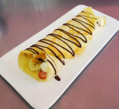

← Volver al módulo 1

Crepas
Delicadas crepas rellenas con crema chantilly, frutas frescas y chocolate semi amargo.
Ingredientes
- 2 huevos
- 1 taza de leche
- 1 taza de harina
- 30 gr de mantequilla sin sal
- Pizca de sal
- 150 ml de crema de leche
- 3 cucharadas de leche
- Frutillas c/n
- Azúcar impalpable c/n
- 25 gr de chocolate semi amargo
Preparación
Realizamos mise en place.
Ponemos a la licuadora los huevos, mantequilla, azúcar, leche, sal y harina.
Licuar todo y dejar reposar por 10 minutos.
Picamos las frutas en brunoise.
Batimos la crema de leche hasta punto chantilly.
Derretimos el chocolate.
En un sartén caliente con un poco de mantequilla, vertemos un poco de la masa formando una capa muy delgada y sellamos.
Reservamos las crepas cocidas.
Armado
En medio de la crepa ponemos la crema chantilly.
Agregamos la fruta picada.
Cerramos con la misma crepa.
Cubrimos con una capa de chocolate en forma de hilo.